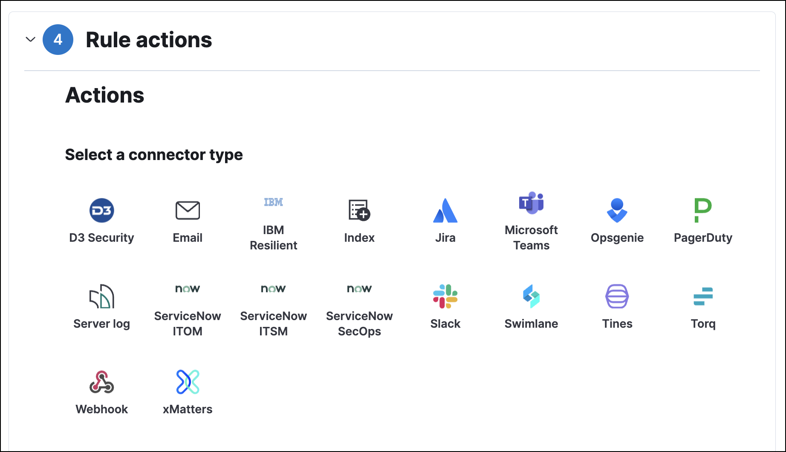

Creating detection rulesedit
This functionality is in beta and is subject to change. The design and code is less mature than official GA features and is being provided as-is with no warranties. Beta features are not subject to the support SLA of official GA features.
Rules run periodically and search for source events or machine learning job anomaly scores that meet their criteria. When a rule’s criteria are met, a detections alert is created.
You can create the following types of rules:
- Custom query: Query-based rule, which searches the defined indices and creates an alert when a document matches the rule’s query.
-
Machine learning: Machine learning rule, which creates an alert when a machine learning job discovers an anomaly above the defined threshold (see Anomaly Detection with Machine Learning).
For machine learning rules, the associated machine learning job must be running. If the machine learning job is not running, the rule will:
- Run and create alerts if existing anomaly scores above the defined threshold are discovered.
- Issue an error stating the machine learning job was not running when the rule executed.
-
Threshold rules: Searches the defined indices and creates a detections alert when the number of times the specified field’s value meets the threshold during a single execution. When multiple values meet the threshold, an alert is generated for each value.
For example, if the threshold
fieldissource.ipand itsvalueis10, an alert is generated for every source IP address that appears in at least 10 of the rule’s search results. - Event correlation: Searches the defined indices and creates an alert when results match an Event Query Language (EQL) query.
-
Indicator match: Creates an alert when Elastic Security index field values match
field values defined in the specified indicator index patterns. For example, you
can create a threat index for IP addresses and use this index to create an alert
whenever an event’s
destination.ipequals a value in the index. Threat index field mappings should be ECS-compliant. For information on creating Elasticsearch indices and field types, see Index some documents, Create index API and Field data types.
When creating or modifying rules, you can add exceptions that prevent a rule from generating an alert even when its criteria are met. This is useful for reducing noise, such as preventing alerts from trusted processes and internal IP addresses. Rule exceptions and value lists describes how to add exceptions to a rule.
You can add exceptions to custom query, event correlation, and indicator match rule types.
If you are creating a custom query, threshold, or event correlation rule, you can preview the rule beforehand to see what kind of results you can expect. See Preview your rule in this topic for more information.
For both prebuilt and custom rules, you can use the Kibana Alerting and Actions feature to send notifications when alerts are created. Notifications can be sent via Email, PagerDuty, Slack, and Webhook, and can be configured when you create or edit a rule.
Creating a new rule requires the following steps:
After you activate a rule, periodically check the rule is running as expected
in the Monitoring tab on the All rules page. If you see
values in the Gap column, you can Troubleshoot missing alerts.
When a rule fails to run, the Elastic Security app tries to rerun it at its next scheduled run time.

Select rule type and scopeedit
- Go to Security → Detections → Manage detection rules.
-
Click Create new rule. The Create new rule page displays.

-
Do one of the following:
-
To create a rule based on a machine learning anomaly threshold, select Machine Learning, then select:
- The required machine learning job.
-
The anomaly score threshold above which alerts are created.
To create or edit machine learning rules, you must have the appropriate license or use a cloud deployment. Additionally, you must have the
machine_learning_adminuser role, and the selected machine learning job must be running for the rule to function correctly.
-
Create a custom ruleedit
-
To create a rule based on a KQL or Lucene query, select Custom query and then:
- Define which Elasticsearch indices the rule searches for alerts.
-
Use the filter and query fields to create the criteria used for detecting alerts.
You can use Kibana saved queries (save icon) and queries from saved timelines (
Import query from saved timeline) as rule conditions.For example, the following rule detects when the
vssadmin delete shadowsWindows command is executed:-
Index patterns:
winlogbeat-*Winlogbeat ships Windows event logs to Elastic Security.
-
Custom query:
event.action:"Process Create (rule: ProcessCreate)" and process.name:"vssadmin.exe" and process.args:("delete" and "shadows")Searches the
winlogbeat-*indices forvssadmin.exeexecutions with thedeleteandshadowarguments, which are used to delete a volume’s shadow copies.
This example is based on the Volume Shadow Copy Deletion via VssAdmin prebuilt rule.
-
Create a threshold ruleedit
-
To create a rule based on a source event field threshold, select Threshold and then:
- Define which Elasticsearch indices the rule analyzes for alerts.
- Use the filter and query fields to create the criteria used for detecting alerts.
-
Use the
FieldandThresholdfields to determine which source event field is used as a threshold and the threshold’s value.For example, if the
Fieldissource.ipand itsThresholdis10, an alert is generated for every source IP address that appears in at least 10 of the rule’s search results.You can also leave the
Fieldundefined. The rule then creates an alert when the number of search results is equal to or greater than theThresholdvalue.If you want an alert for 10 or more failed login attempts to a specific host per rule execution, enter the following rule parameters:
-
Custom query:
host.name : liv-win-19 and event.category : "authentication" and event.outcome : "failure" - Field: Leave blank
-
Threshold:
10
-
Custom query:
Create an event correlation ruleedit
-
To create an event correlation rule using Event Query Language (EQL), select Event Correlation and then:
- Define which Elasticsearch indices the rule searches for alerts.
-
Add an EQL statement used to detect alerts.
For example, the following rule detects when
msxsl.exemakes an outbound network connection:-
Index patterns:
winlogbeat-*Winlogbeat ships Windows events to Elastic Security.
-
EQL query:
sequence by process.entity_id [process where event.type in ("start", "process_started") and process.name == "msxsl.exe"] [network where event.type == "connection" and process.name == "msxsl.exe" and network.direction == "outgoing"]Searches the
winlogbeat-*indices for sequences of amsxsl.exeprocess start event followed by an outbound network connection event that was started by themsxsl.exeprocess.
For sequence events, the Elastic Security app generates a single alert when all events listed in the sequence are detected. To see the matched sequence events in more detail, you can view the alert in the Timeline, and, if all events came from the same process, open the alert in Analyze Event view.
-
Create an indicator match ruleedit
-
To create an indicator match rule that searches the specified indicator index patterns for field values, select Indicator Match and then fill in these fields:
- Index patterns: The Elastic Security event indices on which the rules runs.
-
Custom query: The query and filters used to retrieve the required results from the Elastic Security event indices. For example, if you only need to check
destination.ipevent values, adddestination.ip : *.If you want the rule to check every field in the indices, use this wildcard expression:
*:*. - Indicator index patterns: The indicator index patterns containing field values for which you want to generate alerts.
- Indicator index query: The query and filters used to filter the fields from the indicator index patterns.
-
Indicator Mapping: Compares the values of the specified event and indicator field values. When the field values are identical, an alert is generated. To define which field values are compared from the indices:
- Field: The field used for comparing values in the Elastic Security event indices.
- Indicator index field: The field used for comparing values in the threat indices.
-
You can add
ANDandORclauses to define when alerts are generated.For example, to create a rule that generates alerts when
host.nameanddestination.ipfield values in thelogs-*orpacketbeat-*Elastic Security indices are identical to the corresponding field values in themock-threat-listthreat index, enter the rule parameters seen in the following image:
When an indicator match rule’s conditions are met, the resulting detection alert does not contain explicit information about which event field(s) match which indicator field(s). As such, when you configure basic rule settings, it is recommended that you include a reference to the field(s) to be matched in the rule
Nameand ruleDescription, and ensure that the Timeline template associated with the rule includes pre-defined column(s) for these fields. For example, if you create an indicator match rule that looks for matches between thefile.extensionfield in file events and thethreat.file.extensionfield in an indicator index, you might name your rule "file.extension matches ransomware file extension", so that when an analyst investigates the detection alerts, they will see the rule name and know to further investigate thefile.extensionfield value.-
Select the Timeline template used when you investigate an alert created by the rule in Timeline (optional).
Before you create rules, create Timeline templates so they can be selected here. When alerts generated by the rule are investigated in Timeline, Timeline query values are replaced with their corresponding alert field values.
-
Click Continue. The About rule pane is displayed.

- Continue with previewing the rule (optional) or configuring basic rule settings.
-
Preview your rule (optional)edit
You can preview a custom query, threshold, or EQL (Event Correlation) rule to get feedback on how noisy the rule will be before submitting it. This allows you to fine-tune the query, if needed, to reduce the amount of alerts that may come in.
To preview a rule:
- Write the rule query.
-
Select a timeframe of data to preview query results —
Last hour,Last day, orLast month— from the Quick query preview drop-down. - Click Preview results. A histogram shows the number of alerts you can expect based on the defined rule parameters and historical events in your indices.
A "noise warning" is displayed if the preview generates more than alert per hour.

The preview excludes effects of rule exceptions and timestamp overrides.
Configure basic rule settingsedit
-
Fill in the following fields:
- Name: The rule’s name.
- Description: A description of what the rule does.
-
Default severity: Select the severity level of alerts created by the rule:
-
Low: Alerts that are of interest but generally not considered to be security incidents. Sometimes, a combination of low severity events can indicate suspicious activity. -
Medium: Alerts that require investigation. -
High: Alerts that require an immediate investigation. -
Critical: Alerts that indicate it is highly likely a security incident has occurred.
-
-
Severity override (optional): Select to use source event values to override the Default severity in generated alerts. When selected, a UI component is displayed where you can map the source event field values to severity levels. The following example shows how to map severity levels to
host.namevalues:
-
Default risk score: A numerical value between 0 and 100 that correlates with the Severity level. General guidelines are:
-
0-21represents low severity. -
22-47represents medium severity. -
48-73represents high severity. -
74-100represents critical severity.
-
-
Risk score override (optional): Select to use a source event value to override the Default risk score in generated alerts. When selected, a UI component is displayed where you can select the source field used for the risk score. For example, if you want to use the source event’s risk score in alerts:

-
Continue with one of the following:
Configure advanced rule settings (optional)edit
-
Click Advanced settings and fill in these fields:
- Reference URLs (optional): References to information that is relevant to the rule. For example, links to background information.
- False positives (optional): List of common scenarios that may produce false-positive alerts.
- MITRE ATT&CKTM (optional): Relevant MITRE framework tactics and techniques.
- Tags (optional): Words and phrases used to categorize, filter, and search the rule.
- Investigation guide (optional): Information for analysts investigating alerts created by the rule.
- Author (optional): The rule’s authors.
- License (optional): The rule’s license.
-
Elastic endpoint exceptions (optional): Adds all Elastic Endpoint Security rule exceptions to this rule (see Rule exceptions and value lists).
If you select this option, you can add Endpoint exceptions on the Rule details page. Additionally, all future exceptions added to the Elastic Endpoint Security rule also affect this rule.
- Building block (optional): Select to create a building-block rule. By default, alerts generated from a building-block rule are not displayed in the UI. See About building-block rules for more information.
-
Rule name override (optional): Select a source event field to use as the
rule name in the UI (Alerts table). This is useful for exposing, at a glance,
more information about an alert. For example, if the rule generates alerts from
Suricata, selecting
event.actionlets you see what action (Suricata category) caused the event directly in the Alerts table. -
Timestamp override (optional): Select a source event timestamp field. When selected, the rule’s query uses the selected field, instead of the default
@timestampfield, to search for alerts. This can help reduce missing alerts due to network or server outages. Specifically, if your ingest pipeline adds a timestamp when events are sent to Elasticsearch, this avoids missing alerts due to ingestion delays.
-
Click Continue. The Schedule rule pane is displayed.

- Continue with setting the rule’s schedule.
Set the rule’s scheduleedit
- Select how often the rule runs.
-
Optionally, add
Additional look-back timeto the rule. When defined, the rule searches indices with the additional time.For example, if you set a rule to run every 5 minutes with an additional look-back time of 1 minute, the rule runs every 5 minutes but analyses the documents added to indices during the last 6 minutes.
It is recommended to set the
Additional look-back timeto at least 1 minute. This ensures there are no missing alerts when a rule does not run exactly at its scheduled time.The Elastic Security app performs deduplication. Duplicate alerts discovered during the
Additional look-back timeare not created. -
Click Continue. The Rule actions pane is displayed.

-
Do one of the following:
- Continue with setting up alert notifications (optional).
- Create the rule (with or without activation).
Set up alert notifications (optional)edit
Use Kibana Actions to set up notifications sent via other systems when alerts are generated.
To use Kibana Actions for alert notifications, you need the appropriate license.
-
Set when to send notifications:
- On each rule execution: Sends a notification every time new alerts are generated.
-
Hourly: Sends a notification every hour. -
Daily: Sends a notification every day. -
Weekly: Sends a notification every week.Notifications are sent only when new alerts are generated.
The available action types are displayed.

-
Select the required action type, which determines how notifications are sent (Email, PagerDuty, Slack, Webhook).
Each action type requires a connector. Connectors store the information required to send the notification from the external system. You can configure connectors while creating the rule or on the Kibana Alerts and Actions page (Management → Alerts and Actions → Connectors). For more information, see Action and connector types.
The selected action type fields are displayed (Slack example).

-
Fill in the fields for the selected action types. For all action types, click
the icon above the
Messagefield to add placeholders for rule and alert details to the notifications. -
Create the rule with or without activation.
When you activate a rule, it is queued and its schedule is determined by its initial run time. For example, if you activate a rule that runs every 5 minutes at 14:03 but it does not run until 14:04, it will run again at 14:09.
Alert notification placeholdersedit
These placeholders can be added to rule action fields:
-
{{state.signals_count}}: Number of alerts detected -
{{{context.results_link}}}: URL to the alerts in Kibana -
{{context.rule.anomaly_threshold}}: Anomaly threshold score above which alerts are generated (machine learning rules only) -
{{context.rule.description}}: Rule description -
{{context.rule.false_positives}}: Rule false positives -
{{context.rule.filters}}: Rule filters (query rules only) -
{{context.rule.id}}: Unique rule ID returned after creating the rule -
{{context.rule.index}}: Indices rule runs on (query rules only) -
{{context.rule.language}}: Rule query language (query rules only) -
{{context.rule.machine_learning_job_id}}: ID of associated machine learning job (machine learning rules only) -
{{context.rule.max_signals}}: Maximum allowed number of alerts per rule execution -
{{context.rule.name}}: Rule name -
{{context.rule.output_index}}: Index to which alerts are written -
{{context.rule.query}}: Rule query (query rules only) -
{{context.rule.references}}: Rule references -
{{context.rule.risk_score}}: Default rule risk score -
{{context.rule.rule_id}}: Generated or user-defined rule ID that can be used as an identifier across systems -
{{context.rule.saved_id}}: Saved search ID -
{{context.rule.severity}}: Default rule severity -
{{context.rule.threat}}: Rule threat framework -
{{context.rule.threshold}}: Rule threshold values (threshold rules only) -
{{context.rule.timeline_id}}: Associated timeline ID -
{{context.rule.timeline_title}}: Associated timeline name -
{{context.rule.type}}: Rule type -
{{context.rule.version}}: Rule version
The {{context.rule.severity}} and {{context.rule.risk_score}}
placeholders contain the rule’s default values even when the Severity override
and Risk score override options are used.
To understand which fields to parse, see the Detections API to view the JSON representation of rules. The following is an example of mustache syntax to display the list of enabled filters:
{{#context.rule.filters}}
{{^meta.disabled}}{{meta.key}} {{#meta.negate}}NOT {{/meta.negate}}{{meta.type}} {{^exists}}{{meta.value}}{{meta.params.query}}{{/exists}}{{/meta.disabled}}
{{/context.rule.filters}}